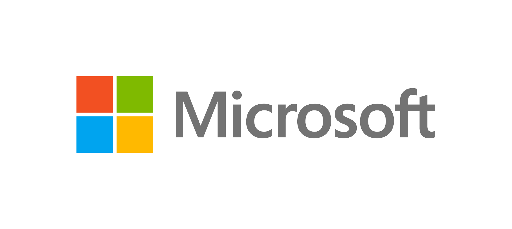

Bienvenue dans notre section Articles ! Ici, vous trouverez une sélection d'analyses approfondies et d'actualités sur les menaces informatiques récentes.
Que vous soyez un professionnel de la cybersécurité ou simplement curieux d'en savoir plus sur les cyberattaques, ces articles vous offrent des informations essentielles pour comprendre et prévenir les risques numériques.

L'année 2024 a été marquée par des bouleversements significatifs dans le paysage des ransomwares, principalement en raison de l'opération judiciaire Cronos. Cette initiative internationale, lancée le 19 février 2024, a visé la franchise mafieuse LockBit 3.0, l'un des groupes de ransomwares les plus prolifiques.
WIRED
Malgré cette opération, LockBit 3.0 a tenté de reprendre ses activités dès fin février, avec une intensification notable fin mars. Cependant, son activité a connu une baisse significative à partir d'août, notamment après l'arrestation de trois acteurs clés liés au groupe, dont un en France.
LE MONDE
Parallèlement, d'autres groupes de ransomwares ont émergé ou gagné en notoriété. RansomHub, Akira, Hunters International, Play et Medusa figurent parmi les plus actifs, avec RansomHub se distinguant par une recrudescence des attaques, surpassant même les niveaux atteints par LockBit 3.0.
REVERSINGLABS
Cette fragmentation de l'écosystème des ransomwares a conduit à une diversité accrue des méthodes d'attaque. Certains cybercriminels se contentent d'exfiltrer quelques gigaoctets de données pour faire chanter leurs victimes, tandis que d'autres exploitent des failles de configuration de serveurs web. Cette hétérogénéité complique davantage la défense contre ces menaces.
REVERSINGLABS
En dépit des efforts des forces de l'ordre, les ransomwares continuent de représenter une menace majeure. Les paiements de rançons ont atteint 1,1 milliard de dollars en 2023, témoignant de l'ampleur du problème.
FORUM ÉCONOMIQUE MONDIAL
Pour une analyse plus approfondie de l'évolution des ransomwares en 2024, vous pouvez consulter l'article complet sur LeMagIT.
Source : LE MONDE
Source : LEMAGIT
Le FBI et la CISA (Agence de cybersécurité et de sécurité des infrastructures) mettent en garde contre des cyberattaques orchestrées par des hackers chinois, notamment le groupe Salt Typhoon, lié au gouvernement chinois. Ces attaques visent les réseaux télécoms américains et mondiaux, permettant d'accéder à des données sensibles, voire à des écoutes téléphoniques.
La sécurité des communications en question
Pour limiter les risques, le FBI encourage l’utilisation de communications chiffrées via des applications spécialisées comme Signal, Threema ou Session. Les applications classiques comme iMessage et les protocoles récents comme RCS, malgré leur chiffrement, présentent des vulnérabilités lorsqu’ils connectent utilisateurs iOS et Android.
Vers une adoption croissante des messageries sécurisées
Face à ces menaces, les citoyens sont invités à privilégier des plateformes offrant un chiffrement de bout en bout. Bien que populaire en Europe, WhatsApp pourrait voir son utilisation augmenter aux États-Unis, malgré des critiques sur la gestion des métadonnées.
Source : Guillaume Belfiore – Clubic, 5 décembre 2024

En 2024, les attaques de phishing ont atteint un niveau sans précédent, propulsées par l'usage croissant de l’Intelligence Artificielle (IA). Les cybercriminels exploitent des outils avancés comme les grands modèles de langage (LLM) pour concevoir des campagnes ciblées, efficaces et quasi indétectables. L’IA permet également de cloner des sites web et de personnaliser des courriels de manière convaincante, brouillant davantage les frontières entre légitime et frauduleux.
Évolution des tactiques de phishing
Le phishing a évolué de simples courriels génériques à des attaques hautement sophistiquées, intégrant des deepfakes et du vishing (phishing vocal). En 2023, une augmentation de 58 % des attaques mondiales a été enregistrée, reflétant l'ampleur de cette menace.
Réponses des entreprises
Les entreprises doivent adopter des stratégies proactives, comme l’architecture Zero Trust, et exploiter des technologies IA pour analyser les menaces et automatiser les réponses. L’IA peut aider à détecter des anomalies, prioriser les incidents, et offrir des recommandations rapides, améliorant ainsi la résilience des organisations.
Conclusion
Les cyberattaques continueront à évoluer en tandem avec les avancées technologiques. Seule une combinaison de vigilance humaine et d’outils technologiques avancés permettra aux entreprises de faire face à cette menace croissante.
Source : Qevlar AI – Hamza Sayah, octobre 2024.
Le 16 avril 2024, l’hôpital Simone-Veil de Cannes a été la cible d’une cyberattaque revendiquée par le groupe de hackers LockBit. Après avoir exigé une rançon non communiquée, le groupe a publié 61 gigaoctets de données confidentielles sur le dark web, incluant des informations sensibles sur les patients (bilans de santé, données psychologiques) ainsi que des données du personnel (cartes d’identité, bulletins de salaire).
Cette attaque a gravement perturbé les activités de l’hôpital, entraînant l’annulation des opérations non urgentes et la déconnexion totale de ses systèmes informatiques. Bien que l’activité ait repris progressivement, l’établissement a déposé plainte et alerté les autorités compétentes, notamment la CNIL et l’ANSSI.
LockBit, un groupe de hackers russophones, est connu pour son expertise en ransomware. Malgré des efforts internationaux pour le démanteler en février, il continue ses activités et reste une menace majeure pour les institutions publiques et privées.
Le 16 avril 2024, l’hôpital Simone-Veil de Cannes a été la cible d’une cyberattaque revendiquée par le groupe de hackers LockBit. Après avoir exigé une rançon non communiquée, le groupe a publié 61 gigaoctets de données confidentielles sur le dark web, incluant des informations sensibles sur les patients (bilans de santé, données psychologiques) ainsi que des données du personnel (cartes d’identité, bulletins de salaire).
Cette attaque a gravement perturbé les activités de l’hôpital, entraînant l’annulation des opérations non urgentes et la déconnexion totale de ses systèmes informatiques. Bien que l’activité ait repris progressivement, l’établissement a déposé plainte et alerté les autorités compétentes, notamment la CNIL et l’ANSSI.
LockBit, un groupe de hackers russophones, est connu pour son expertise en ransomware. Malgré des efforts internationaux pour le démanteler en février, il continue ses activités et reste une menace majeure pour les institutions publiques et privées.
Source : Usine Digitale
16 avril 2024

Le groupe hospitalier Ramsay Santé a été la cible d’une nouvelle cyberattaque en janvier 2023, après un précédent incident en 2019. Une tentative d’intrusion a été détectée sur certains serveurs, incitant le groupe à activer immédiatement sa procédure de sécurité, notamment en fermant les accès extérieurs à son réseau.
D'après des sources locales, l’attaque impliquait un ransomware, accompagné d’une demande de rançon importante. Malgré ces perturbations, les soins ont continué normalement, bien que dans des conditions dégradées. À ce jour, aucun vol de données n’a été détecté, mais les investigations se poursuivent avec le soutien des autorités et d’experts en cybersécurité.
Cette attaque souligne une fois de plus les menaces persistantes auxquelles sont confrontés les établissements de santé, cibles privilégiées des cybercriminels.
Source : Le Monde Informatique
L'article a été publié le 26 janvier 2023.
La Russie a mené une cyberattaque d'une ampleur inédite contre l'Ukraine, ciblant les registres de l'État et interrompant temporairement l'accès à des documents gouvernementaux essentiels. La vice-première ministre ukrainienne, Olga Stefanishyna, a confirmé que cette offensive, attribuée à des agents russes, visait à déstabiliser les infrastructures critiques dans le contexte de la guerre en cours.
Les systèmes touchés incluent les registres de l'état civil, des droits de propriété et des personnes morales, relevant du ministère de la Justice. Les services limités pourraient être rétablis rapidement, mais le retour complet à la normale pourrait prendre jusqu'à deux semaines. Une analyse complète est prévue après la restauration des systèmes pour renforcer la cybersécurité nationale.
Depuis le début du conflit, l'Ukraine a été la cible de multiples attaques informatiques de grande envergure. À titre de riposte, des groupes ukrainiens comme Cyber Resistance ont également mené des campagnes contre les infrastructures russes.
L'attaque met en lumière les risques accrus pour les infrastructures numériques critiques, nécessitant des mesures renforcées pour protéger les données sensibles et garantir la résilience des systèmes face aux cybermenaces.
Source : LE MONDE INFORMATIQUE

Le 4 décembre 2024, des attaquants ont exploité une vulnérabilité de script injection dans GitHub Actions, permettant l’introduction de code malveillant dans la bibliothèque Python Ultralytics AI, utilisée pour développer des modèles de vision par ordinateur. Cette compromission a permis de publier une version trojanisée (8.3.41) sur PyPI, avec un malware servant à miner de la cryptomonnaie via XMRig.
Points clés :
Impact : YOLO, algorithme de détection d’objets associé à Ultralytics, est très populaire avec 30 000 étoiles sur GitHub et 60 millions de téléchargements PyPI.
Mode opératoire : Les pirates ont manipulé le processus de CI/CD GitHub Actions pour insérer leur code malveillant dans les paquets distribués via PyPI, évitant les dépôts GitHub publics habituels.
Propagation : Deux versions compromises (8.3.41 et 8.3.42) ont été publiées avant la correction avec la version 8.3.43.
Exploitation :
Une vulnérabilité d’injection signalée en août 2024 et corrigée par Ultralytics a réapparu dans leur pipeline CI/CD, permettant l’exécution d’un code arbitraire.
Les attaquants ont utilisé des techniques d’empoisonnement de cache et ont modifié deux fichiers pour cibler les plateformes déployant les paquets malveillants.
Conséquences et risques :
Bien que l’objectif actuel soit limité au minage de cryptomonnaie, ce vecteur d’attaque aurait pu servir à des implants malveillants plus destructeurs (portes dérobées ou RAT).
Actions recommandées :
Les utilisateurs des versions compromises doivent auditer leurs systèmes pour détecter une éventuelle infection.
GitHub Actions doit être configuré avec prudence pour éviter les vulnérabilités similaires dans le futur.
Source : Le Monde Informatique - 12 décembre 2024

Le framework open source Apache Struts, utilisé pour le développement d'applications web Java EE, est affecté par une vulnérabilité critique (CVE-2024-53677) permettant l'exécution de code à distance (RCE). Exploitée activement, cette faille repose sur une manipulation des paramètres de téléchargement de fichiers, conduisant à un accès non autorisé à des fichiers sensibles (path transversal) et au déploiement de code malveillant.
La faille, avec un score CVSS de 9.5, impacte les versions suivantes :
2.0.0 à 2.3.37
2.5.0 à 2.5.33
6.0.0 à 6.3.0.2
Correctif et Recommandations
Un correctif a été publié dans la version Struts 6.4.0 ou plus récente.
La fondation Apache recommande une mise à jour immédiate pour mitiger les risques. Cette faille rappelle des incidents passés similaires, tels que la CVE-2023-50164 survenue l'année précédente.
Article complet : Le Monde Informatique
Auteur : Dominique Filippone

Microsoft a confirmé une intrusion orchestrée par Midnight Blizzard (anciennement Nobelium), un groupe APT russe parrainé par l'État et connu pour son implication dans l'attaque SolarWinds de 2020. Cette nouvelle attaque a ciblé les systèmes internes de Microsoft entre novembre 2023 et janvier 2024. Les pirates ont utilisé une méthode de "password spray" pour compromettre un ancien compte de test non productif et obtenir un accès limité à des comptes de messagerie internes, notamment ceux de cadres supérieurs et des équipes de cybersécurité.
Les attaquants ont exfiltré certains courriels et documents joints, principalement dans le but d’obtenir des informations liées à leur propre groupe, Midnight Blizzard. Microsoft a précisé que l'attaque n'était pas liée à une vulnérabilité de ses produits ou services et qu’aucun système client, environnement de production, code source ou système d'intelligence artificielle n'avait été compromis.
L’intrusion a été détectée le 12 janvier 2024, et Microsoft a pris des mesures immédiates pour interrompre l’activité malveillante et empêcher tout accès supplémentaire. L’entreprise continue d’enquêter sur cet incident tout en collaborant avec les autorités compétentes.
Dans le cadre de son initiative Secure Future, Microsoft s’engage à renforcer ses standards de sécurité, même si cela peut perturber certains processus existants. Cet incident met en évidence les risques accrus posés par des acteurs étatiques sophistiqués et bien financés.
Article complet : LEMAGIT
Les hackers iraniens affiliés au Corps des Gardiens de la Révolution Islamique (CGRI), connus sous les noms de code APT42, Mint Sandstorm, ou Charming Kitten, ont intensifié leurs activités de piratage, notamment en ciblant la campagne présidentielle américaine de 2024. Déjà actifs en 2020, ils ont récemment lancé des attaques sophistiquées contre des figures politiques comme Donald Trump et Kamala Harris, ainsi que contre des chercheurs, journalistes, membres de la diaspora iranienne, et responsables israéliens.
Leurs techniques incluent l'envoi de courriels piégés et l'utilisation de faux documents imités avec soin. Dans certains cas, ils engagent une discussion préalable avec leurs cibles pour établir un climat de confiance avant de transmettre des fichiers ou des liens malveillants. Ces efforts témoignent d'une montée en puissance significative des cyberactivités iraniennes, selon un rapport publié par la division cybersécurité de Google le 14 août 2024.
Source : Le Monde – Article publié le 23 août 2024.
Une vulnérabilité dans GitHub Actions a été exploitée pour introduire un code malveillant dans la bibliothèque Python Ultralytics AI, utilisée pour développer des modèles de vision par ordinateur. Les paquets infectés, publiés sur PyPI, ont déployé un malware de minage de cryptomonnaie, mais auraient pu servir à des attaques plus graves.
Les versions affectées étaient 8.3.41 et 8.3.42, publiées respectivement le 4 et le 5 décembre 2024. Une version propre, 8.3.43, a été publiée le même jour. Le piratage exploitait une faille de Script Injection signalée auparavant, mais réintroduite dans un patch ultérieur. Le malware modifiait deux fichiers clés pour télécharger une charge utile ciblant des systèmes spécifiques.
Les chercheurs de ReversingLabs ont détecté des indicateurs de compromission et avertissent les utilisateurs d'auditer leurs systèmes s'ils ont utilisé les versions infectées.
Source : lemondeinformatique